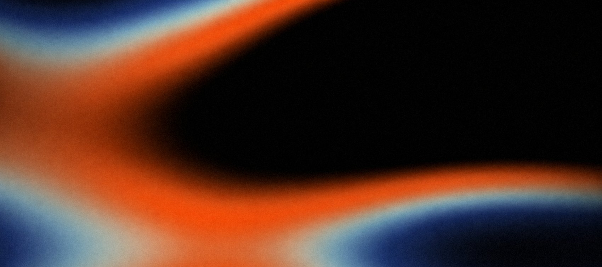

Read the logic first.
THE IMPØSSIBLE OUTCOMES CO.
Twenty-nine layouts. Replace the copy, keep the frame.
Where we are
The evidence is already in the building.
Fifty interviews on file, three years of dashboards and a strategy deck nobody rereads. Every team we meet has the material. What it lacks is an instrument that turns material into a reading.
The work now is to make those truths cohere into one idea a team can hold in an afternoon.
The decision is already being made without us.
Diagnosis is routine—not the emergency option.
Ran a strategy review in the last twelve months.
Changed direction mid-quarter at least once.
Say the deck arrived after the decision.
As many decks produced as decisions taken.
Strategy has a speed problem, not a rigor problem.
What teams need
A reading that lands the same week as the question.
What they expect to give up
The qualities that make a reading trustworthy.
In the room, the kit has to make the method legible, the value obvious and the reading credible in minutes.
A week later, whether the reading still explains what happened decides whether one afternoon becomes a practice.
The audience is one recurring moment.
They have more questions than quarters. Speed feels normal. Guesswork does not.
The quarter took the energy. The decision still has to feel decided.
Speed is a preference, not a confession. Standards remain.
Time matters because the window is real—not because the question got easier.
The same truth has to be told in a different sequence.
Land more. Move into the boardroom. Keep the teams we earned. Find many more.
We need one idea strong enough to make the kit, the reading and the follow-up compound instead of behaving like separate expenses.
We do not have the fuel for a straight-line return.
We need something large enough to bend the path—an existing force that gives more momentum than burning budget alone can create.
Named sources, dated numbers, a method the team can repeat and a reading that still knows what it measured.
One afternoon, one room, one page and the actual Tuesday on which the decision has to happen.
The category
Strategy decks already share a visual operating procedure.
Big number up top. A framework block. A literal recommendation. A constellation of logos. Almost no evidence of a decision beyond the slide.
Every deck is already trying to do four jobs.
Tell me exactly what I am deciding.
Make the answer look worth choosing at a glance.
Give me one useful reason to believe it.
Make scope, price and next step unmistakable.
The paradox
Field Kit knows how to protect a reading through speed.
Method, sampling, synthesis and the read-out form one chain of custody. Every handoff answers to the decision.
A whole improbable thing that is accurate to itself.
Method is the kitchen no one sees.
Sampling, instruments, synthesis and drafting protect the reading before it reaches the room.
The room is where the team meets the reading.
Read-out, questions, the page they keep and what they do Monday are part of the work—not somebody else's problem.
The reading takes the same journey twice.
One journey is cultural. The other is operational. Both ask whether an idea can pass through speed without losing the thing that makes it true.
We don't make forecasts. We make readings.
A reading is not a prediction. It is an encounter: people bring distinct questions, methods and standards into the same room, then decide something together without pretending those differences disappeared.
At its best, a good afternoon is a whole set of differences stabilized, however implausibly, into one decision.
The reveal
Stop asserting.Start reading
as measured.
Every word is an instruction—not decoration.
Drop the framework theater. Name the source, the sample, the method and the actual job without apology.
Begin with the decision and design every handoff so the evidence survives contact with the room.
Let every number keep its source, date and error while becoming fully usable in the room.
The evidence contains the position. The page makes it visible.
Lead with the reading, the value and one fast proof.
Lead with the question, then unfold the deeper how.
Lead with rigor and real-life utility.
Lead with evidence-first standards, relevance, repeat and incrementality.
Once the practice stops asserting, communication starts sounding like itself.
Tell how a reading kept its sources while becoming usable in an afternoon.
Celebrate the sampler, the dashboard and the useful systems that make a decision work.
Poke the polished consulting myth in the ribs with readings that tell the truth better.